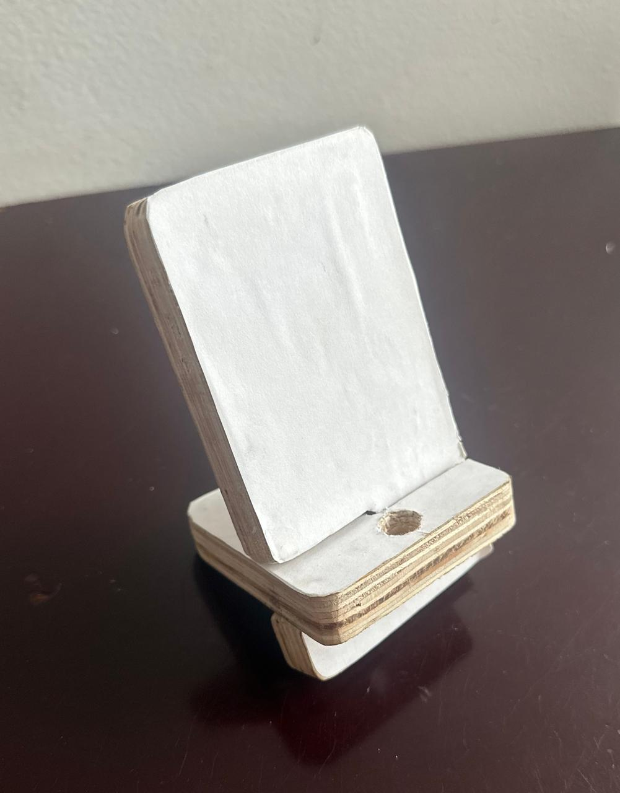
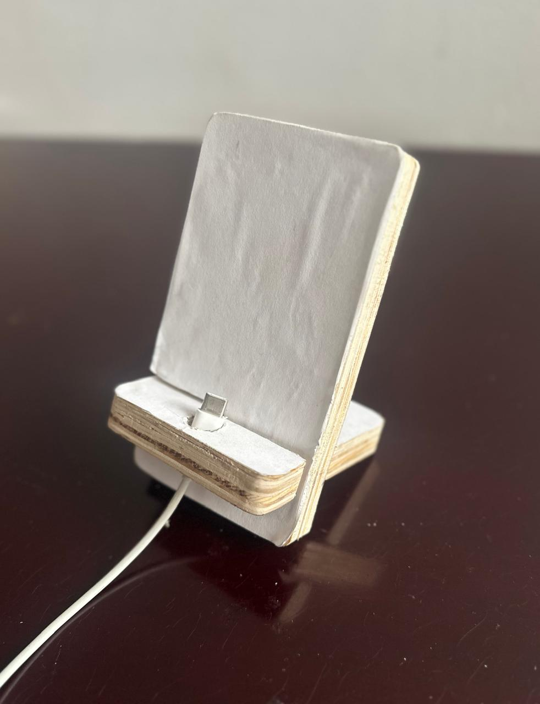
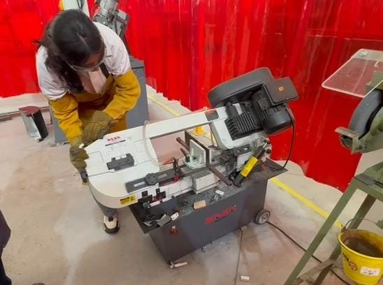
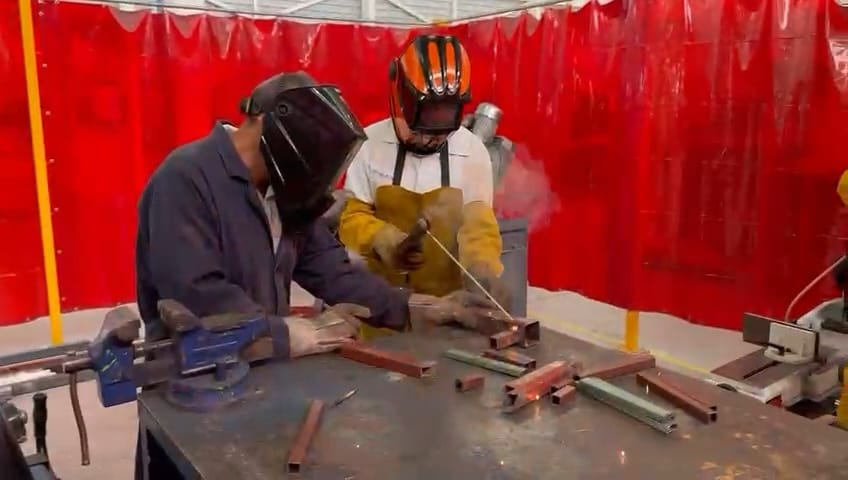
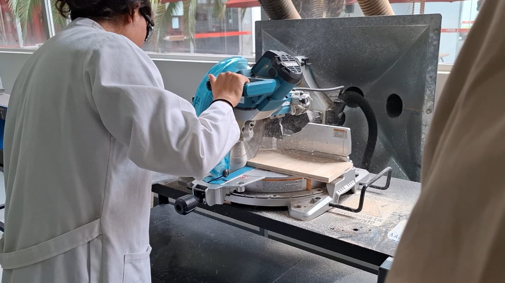
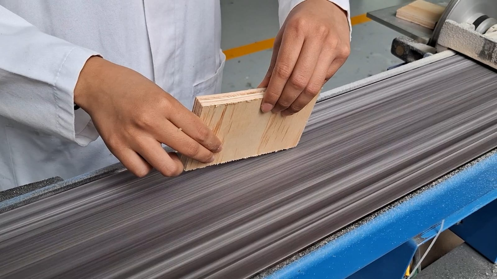
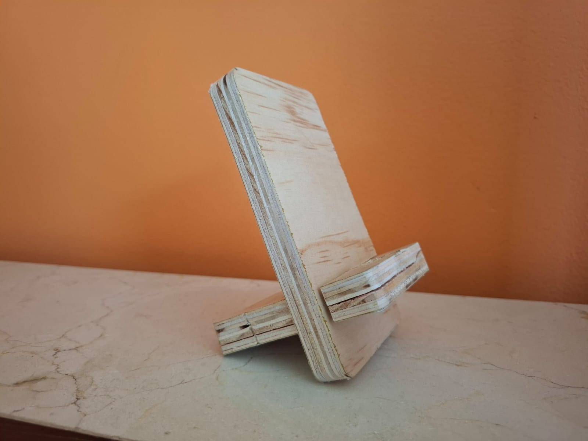

SEMANA 3 (PRÁCTICA DE LABORATORIO)
PRÁCTICA DE KAREN
En esta semana realizamos una práctica en la plancha del IDIT para aprender a utilizar herramientas y máquinas tanto de metal como de madera.
Primera parte-Trabajo con metal
Durante la primera hora, el Ing. Gustavo nos enseñó a utilizar la cortadora de sierra, la cortadora circular y la planta de soldar.
Seguridad y equipo de protección utilizados:
Antes de comenzar, solicitamos el material de protección en la bodega del IDIT: - Guantes de carnaza - Polainas - Mangas de carnaza - Pechera de carnaza - Lentes de seguridad - Careta de soldar
Uso de la cortadora de sierra:
- Colocar y ajustar el metal en el sujetador o tornillo de banco de la máquina.
- Encender la máquina.
- Bajar con cuidado la parte de la sierra hasta realizar el corte, en cuanto llegue hasta abajo se detendrá por sí sola.
- Esperar a que la sierra se detenga por completo antes de retirar la pieza.
Uso de la cortadora circular:
- Colocar el metal sobre la base de la máquina.
- Presionar el seguro de la máquina.
- Presionar el botón de encendido y mantenerlo mientras se realiza el corte.
- Soltar el botón de encendido al terminar el corte para que la máquina se detenga.
- Esperar a que la hoja se detenga antes de retirar la pieza.
Práctica de soldadura:
- Colocarse todo el equipo de seguridad (careta, pechera, guantes, mangas, polainas).
- Preparar las piezas a unir y encender la máquina.
- Colocar el electrodo.
- Iniciar el arco eléctrico tocando la pieza y deslizar el electrodo de forma uniforme.
- Retirar el electrodo al terminar y apagar la máquina.
Segunda parte-Trabajo con madera
En la segunda hora, trabajamos con nuestro profesor en el área de corte y lijado de madera para fabricar un porta celular. En esta parte solo usamos lentes de protección, ya que los guantes podían ser peligrosos al trabajar con las cortadoras.
Pasos:
1. Corte inicial de la madera: Con una cortadora circular vertical, reducimos las piezas grandes de madera a pedazos más pequeños.
2. Corte de bordes: El maestro utilizó una cortadora de mesa (más peligrosa y bajo llave) para recortar los bordes de las piezas.
3. Corte individual de piezas: Con una cortadora circular cortamos las piezas que servirían para cada uno de nuestros porta celulares y pegamos en ellas el papel con el diseño impreso.
4. Corte detallado: Con sierras de marquetería seguimos la figura del diseño.
Nota: Utilizamos un salvadedos (bloque de madera) para empujar y evitar accidentes.
5. Perforación de agujeros: Usamos un taladro de banco para hacer los orificios en las piezas. Para esto hicimos lo siguiente:
a) Acomodar la pieza en la base, alineando el punto del agujero, tanto horizontal como verticalmente.
b) Bajar la broca con cuidado hasta que la pieza de madera de abajo se mueva.
c) Subir la broca y apagar la máquina.
6. Corte de la parte central: Primero sujetamos las piezas en un tornillo de banco para posteriormente retirar con un serrucho los pedazos centrales del diseño.
7. Lijado: Utilizamos una lijadora de banda para dar forma a los bordes.
Resultado:


Nota: Al finalizar, devolvimos el equipo de protección y herramientas a la bodega del IDIT.
Conclusión:
Esta práctica fue un primer acercamiento a las máquinas y habilidades que desarrollaremos en nuestra trayectoria en la universidad. Asimismo, aplicamos las normas de seguridad y adquirimos experiencia en la utilización de las cortadoras, aprendimos a soldar, a lijar, entre otras cosas.
PRÁCTICA DE SAM
Introducción al taller y herramientas
En esta práctica tuvimos la oportunidad de familiarizarnos con las diferentes máquinas y herramientas disponibles en el IDIT. Primero trabajamos con metal, utilizando la cortadora de sierra y la cortadora circular para realizar cortes precisos.


También conocimos la herramienta para soldar, lo cual nos permitió comprender la importancia de este proceso en la unión de piezas metálicas. Durante esta parte, se recalcó la relevancia del uso adecuado del equipo de protección personal (guantes, lentes de seguridad, careta, etc.), ya que es fundamental para prevenir accidentes y garantizar la seguridad en el taller.

Posteriormente, trabajamos con madera. En este caso, realizamos el corte y lijado de piezas con el objetivo de fabricar un portacelular.
Procedimiento para la elaboración del portacelular
- Corte inicial de la madera: comenzamos cortando las tablas de madera en piezas adecuadas para el tamaño del portacelular.
- Colocación del diseño: pegamos encima de la madera una hoja con el diseño del portacelular.
- Corte según el diseño: utilizando las líneas marcadas en la hoja, realizamos los cortes en la madera para obtener las piezas con la forma adecuada.
- Lijado: después de cortar, procedimos a lijar todas las piezas para quitar rebabas, suavizar bordes y dar un mejor acabado a la madera.
- Perforación: realizamos un orificio en la parte inferior, que corresponde al espacio por donde sale el cargador del celular.



Esta actividad nos ayudó a desarrollar habilidades prácticas en el manejo de materiales y herramientas, además de fomentar la creatividad en la elaboración de objetos útiles.
Resultado Portacelular

En general, esta práctica fue de gran importancia porque nos permitió conocer de manera directa cómo operar las máquinas, entender la necesidad de mantener medidas de seguridad en todo momento y aplicar técnicas básicas tanto en el trabajo con metal como con madera.